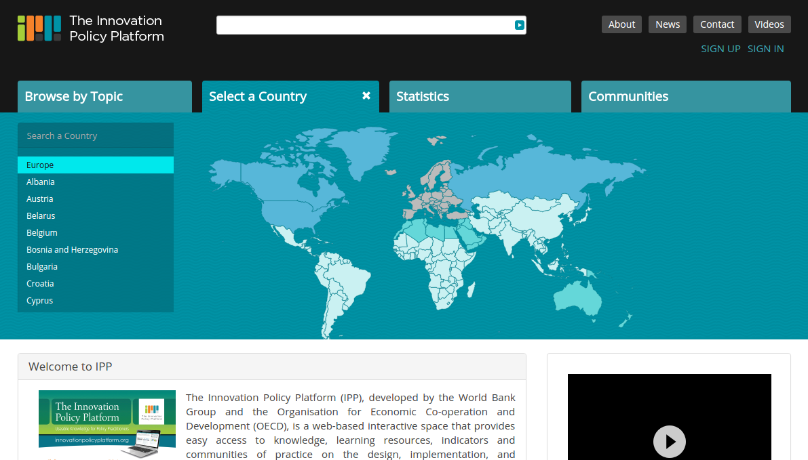
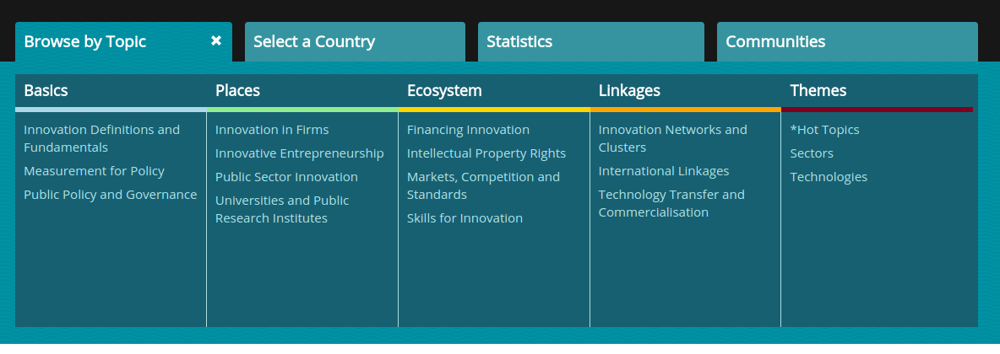
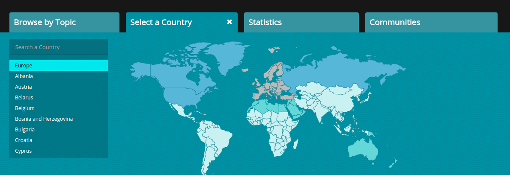
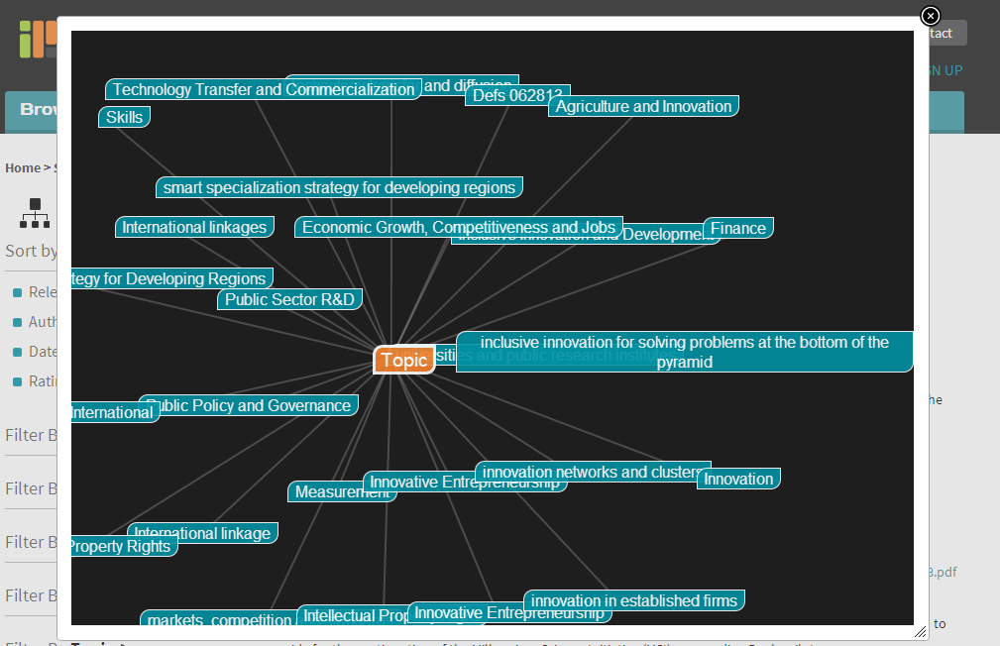
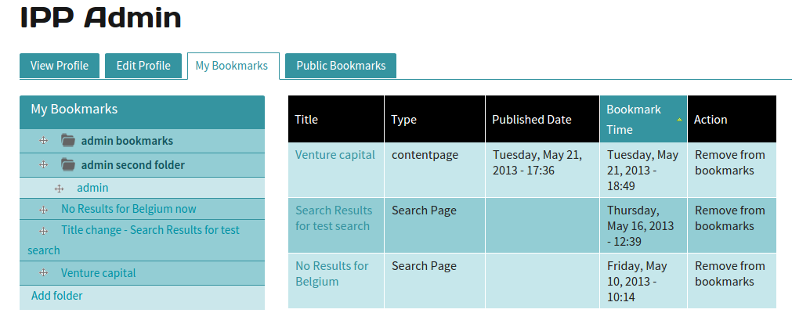
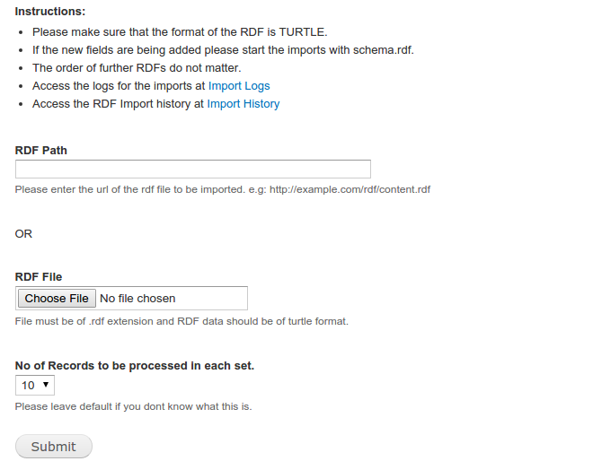
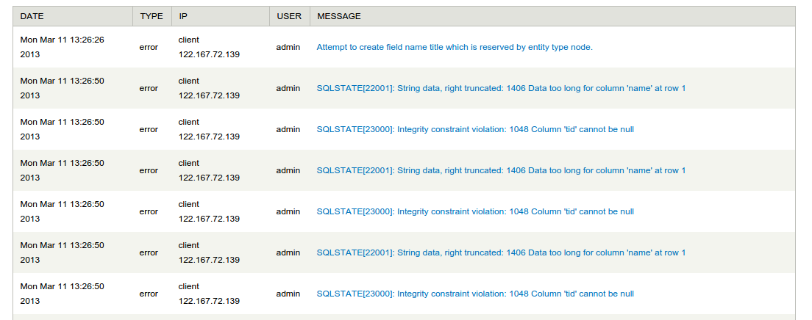

Innovation Policy Platform
One Stop Shop for Policy Practitioners
Presented by Venky Goteti & Gokul NK
Gokul N K
- Graduated from Rashtreeya Vidyalaya (RVCE)
- From Bangalore
- Drupal Architect at Azri Solutions
- Formerly a Java Developer @ Mindtree
- Drupal since 2011
- Lead Maintainer for Automatr Module
- Cofounder of Aziteez
- Bowling Addict
Venkatesh Goteti
- Co-Founder Azri Solutions
- Co-Founder Devthon
- Member of Screening Committee - Vodafone Mobile for Good Awards 2015
- Hacking for Governance Workshop Co-Anchor - Unbox Festival 2012
- Session Facilitator - Kyoorius DesignYatra 2012
Overview
- Background
- Problem Statement
- Goal
- Highlights
- Technology and Solution Stack
- Solution
- Team
- Challenges and Learnings
BACKGROUND
CLIENTS
INNOVATION POLICY PLATFORM
Is a joint effort by the World Bank and the Organisation for Economic Cooperation and Development (OECD) to facilitate knowledge exchange and peer-to-peer learning on various policies specific to developed and developing countries by providing open data access through a rich knowledge discovery layer on top of a data warehouse of all OECD and World Bank data, aimed at transform available data into strategic intelligence.
IN SHORT
- ONE STOP SHOP FOR POLICY PRACTITIONERS
WEBSITE
Problem Statement
- Large number of documents related to Innovation policy in developing and developed countries.
- Difficult to search or filter.
- Integration between various portals and various stakeholders
Goal
- IPP Portal will facilitate collective learning of both conceptual and how-to aspects of innovation policy, tailored to the needs of developing and developed countries.
- The IPP will be an open-data, interactive portal facilitating knowledge exchange and peer-to-peer learning North-South and South-South.
- It will mobilize global resources, knowledge and expertise to help policy practitioners across the world learn about innovation policy design, implementation, and measurement and evaluation (M&E).
- It will identify good-practice solutions that are most appropriate for a specific user context.
Technology and Solution Stack
- Drupal 7
- Easy RDF
- Rapheal and JS Mind-map
- Apache Solr
- Webforms
- Bookmarks
Let us Breakdown the Problems
Unable to locate exact policies that are relevant
Solution
Improve the Navigation
How?
The million Dollar Question
- Browse By Topic
- Browse By County
- Hierarchical Navigation
- Visual Navigation
Browse By Topic
Browse By Country
Hierarchical Navigation

Graphical Navigation
Too Many Policies,
Huge Documents
difficult to get the context right
Solution
Improve the Search
How?
The million Dollar Question
- Comprehensive Advanced Search
- Document Search
- Extract the fragments
- Think like an Explorer!!
- Search and Bookmark
Comprehensive Advanced Search

Document Search
- Apache Solr
- Tika Integration
Extract the Fragments

Think like an Explorer!!

Search And BookMark
- Repetitive use of Search Queries
- Bookmark a Search Query
- Bookmark a Search Result
Bookmark Manager
Integration between various portals
Integration between various stakeholders
Solution
Common Format, Future Ready
How?
The million Dollar Question
- Use of RDF for Site Building
- Use of RDF for Site Settings
- Use of RDF for Content
- Exportable using RDF
Use of RDF for Site Building
RDF in general, Turtle in specific
- Turtle : Terse RDF Triple Language
- Triples : Subject, A predicate, and an object
- Each of these items is expressed as a Web URI.
RDF Import Logs
Sample RDF Files
The Team
- Mohan Sunkara, Account Manager,
- Venkatest Goteti, Digital Head,
- Gokul N K, Project Manager/Architect,
- Chakrapani R, Technical Architect,
- Syam Kumar, Developer,
- Srisharha, Developer,